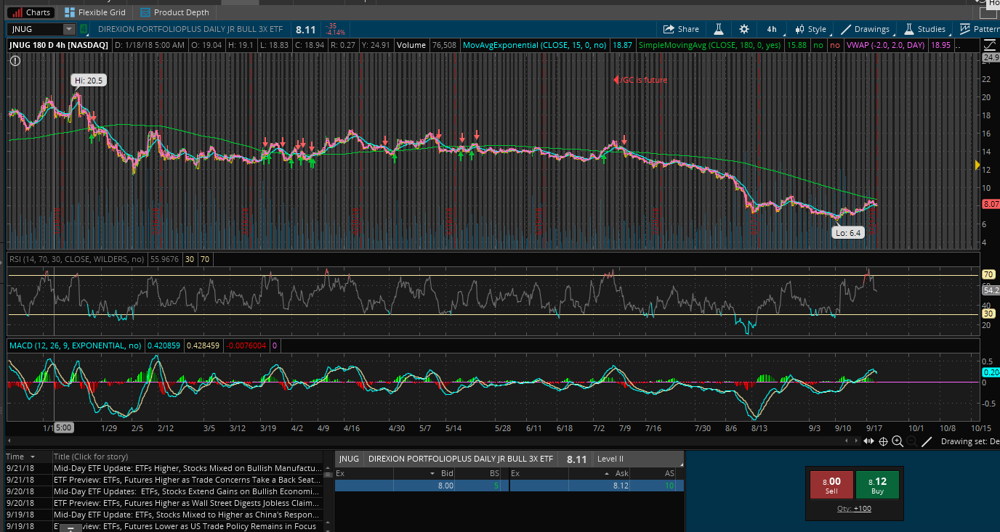

During my free time I like to trade Stocks. I have been doing this the past year and it has really been a great thing in my life. It taught me so much about the markets as well as how to manage my money. It also had me waking up at 8 a.m. Monday-Friday all summer long. This was soooo beneficial to my life. I had way more time to get things done than the average high school kid. I liked to trade Equities and ETF. I am really good at trading the ETF JNUG. JNUG is a bullish 3x ETF. THis means its more volatile and moves close to that of the gold Future (/gc). THis made me most of my money this summer.
